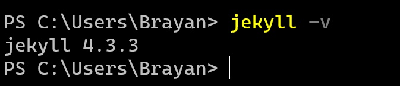
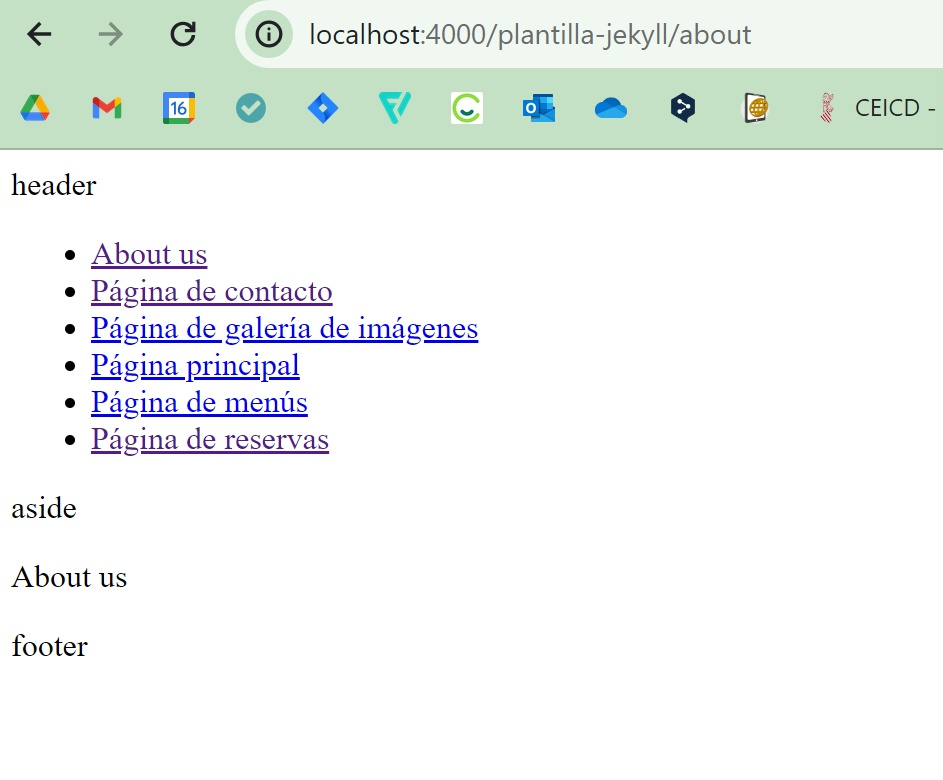

Página de galería de imágenes
2.- Instala Jekyll en tu equipo y haz una captura de pantalla del resultado de ejecutar el comando jekyll -version.
5.- Ejecuta el servidor de test en tu equipo y comprueba que puedes acceder al sitio y navegar por él. Haz una captura de pantalla de una de las páginas cargadas a través del servidor local.
